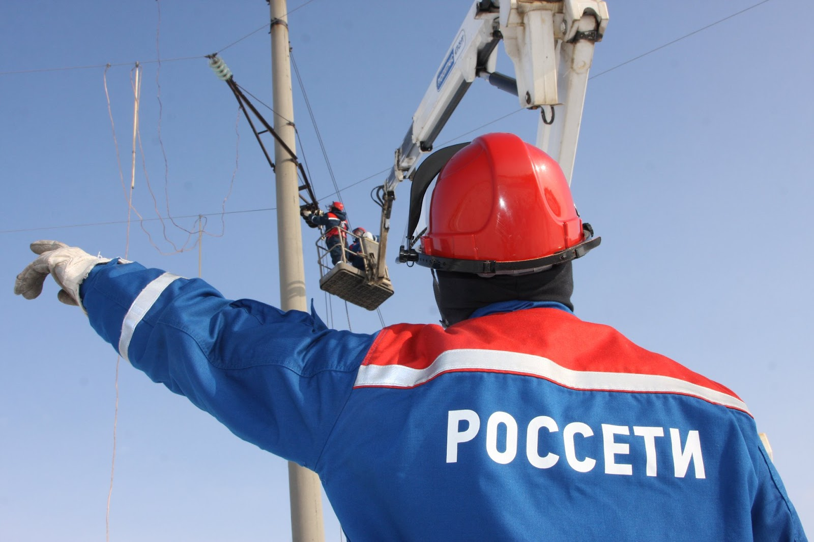

|
|
|---|

|
ПАО «Россети Ценр» БрянскЭнерго г.Клинцы пер.Зайцева 7

Публичное акционерное общество «Российские сети» (ПАО «Россети») – оператор электрических сетей в России – является одной из крупнейших электросетевых компаний в мире. Территория деятельности охватывает - 80 регионов Российской Федерации. Компания управляет 2,40 млн километров линий электропередачи, 528 тыс. подстанций трансформаторной мощностью более 809 тыс. МВА.
В 2020 году полезный отпуск электроэнергии потребителям составил 734,1 млрд кВт∙ч. Численность персонала Группы компаний «Россети» - 216,5 тыс. человек.
Имущественный комплекс ПАО «Россети» включает 35 дочерних и зависимых обществ, в том числе 15 межрегиональных, и магистральную сетевую компанию. Контролирующим акционером является государство в лице Федерального агентства по управлению государственным имуществом РФ, владеющее 88,04 % долей в уставном капитале.
ПАО «Россети» - ведущая компания на российском рынке по внедрению инновационных технологий в магистральном и распределительном электросетевом комплексе. Компания уделяет большое внимание вопросам энергосбережения, энергоэффективности, международного сотрудничества, защиты окружающей среды и охраны труда.
СправочноВ целях обеспечения единого подхода к реализации технической политики и принципов управления электросетевым комплексом Российской Федерации, проведения единой инвестиционной, финансово-экономической и кадровой политики 22 ноября 2012 года Президентом РФ был подписан . Целью структурных преобразований по объединению магистральных и распределительных электрических сетей является создание единого центра ответственности перед акционерами, координация работы по повышению экономической эффективности инвестиционной деятельности, разработка единых стандартов и показателей качества, повышение операционной эффективности предприятий электросетевого комплекса ПАО «Россети». Во исполнение Указа, в соответствии с решением внеочередного Общего собрания акционеров, состоявшегося 23 марта 2013 года, ОАО «Холдинг МРСК» официально переименовано в Открытое акционерное общество "Российские сети" (на английском языке - Joint stock company «Russian Grids»). Соответствующие изменения в Уставe компании 4 апреля 2013 года были зарегистрированы Межрайонной инспекцией Федеральной налоговой службы России по г. Москве № 46 с внесением соответствующей записи в Единый государственный реестр юридических лиц (ЕГРЮЛ). Акционеры компании 30 июня 2015 года утвердили Устав Общества в новой редакции, в котором содержится новое фирменное наименование в части организационно-правовой формы - вслед за вступившими в силу изменениями в Гражданский кодекс РФ. Новая редакция Устава Общества зарегистрирована Межрайонной инспекцией Федеральной налоговой службы России по г. Москве № 46 с внесением соответствующей записи в ЕГРЮЛ 17 июля 2015 года. Генеральный директор ПАО «Россети» . |
Дополнительно
|
+7 (495) 747-92-92 Телефон +7 (495) 747-92-95 Факс posta@mrsk-1.ru Электронная почта 8(800)220-0-220 – Бесплатный номер телефона по вопросам перерыров в передачи и качества электрической энергии |
|---|